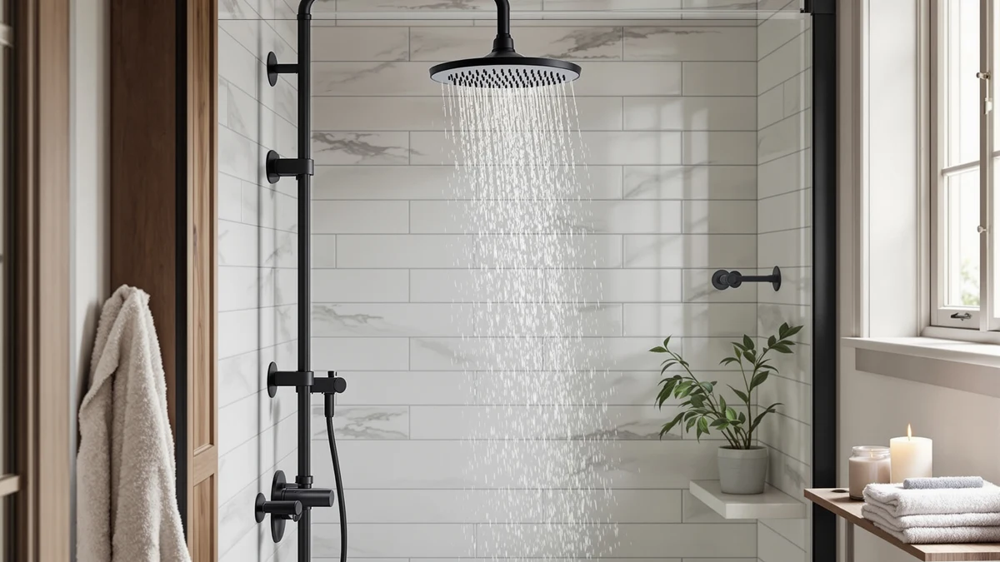

NPYSVSSS Thermostatic Shower System Review (2026): Worth It?
Prices and picks verified as of September 2026. Independent, reader-supported reviews.


Quick Answer
The NPYSVSSS Thermostatic Shower System Dual pairs a rain head and handheld sprayer with a thermostatic valve, which is the main reason it anchors this npysvsss thermostatic shower system review. At $589.99 it costs less than the Delta pick below and more than the ENGA or Bostingner systems, and it earns that middle price with a feature none of the cheaper alternatives include.
Our pick: NPYSVSSS Thermostatic Shower System Dual, $589.99 Check Price on Amazon
Bottom line: our top pick is the NPYSVSSS Thermostatic Shower System Dual Shower Heads with at $589.99.
Things to Know Before You Buy
- Thermostatic valves cost more upfront. That premium is why the NPYSVSSS Dual sits above the ENGA and Bostingner systems in this review, both of which use standard mixing valves instead.
- Brand history varies widely across this list. Delta has decades of U.S. plumbing manufacturing behind it, while NPYSVSSS, ENGA, and Bostingner are newer names selling primarily through Amazon.
- Material matters more than the marketing photos suggest. The NPYSVSSS Dual uses an ABS body with chrome plating, a common and durable combination at this price point.
- Check your existing plumbing rough-in before buying. Shower systems in this category typically need a standard shower arm connection, and swapping a fixed head for a full system can involve more than a five-minute install.
This npysvsss thermostatic shower system review compares the $589.99 NPYSVSSS Thermostatic Shower System Dual against three established alternatives so you can decide whether a thermostatic valve is worth the premium in your bathroom. The Dual bundles a rain shower head and a handheld sprayer behind a single thermostatic control, a combination that puts it ahead of the ENGA and Bostingner systems on features and behind the Delta pick on brand pedigree.
Our verdict up front: the NPYSVSSS Dual earns its place on this list because of that thermostatic cartridge, which locks in water temperature before it reaches either head, a feature none of the three cheaper systems here include as standard. If consistent temperature isn't a priority for you, the Bostingner body-jet system or the ENGA LED option will save you money without giving up much in daily usability.
Why You Should Trust Us
Ilane Tall covers bathroom fixtures for Best Shower Heads and built this npysvsss thermostatic shower system review by comparing manufacturer specifications, current Amazon pricing, and verified owner feedback rather than a marketing pitch. We do not run a fake testing lab, and we don't claim to have installed every shower system we cover. Instead, we cross-reference listed materials, dimensions, and price history against the three closest competitors on the market before publishing a recommendation.
That approach means every claim in this npysvsss thermostatic shower system review traces back to something documented: a listed material, a published price, or a pattern that shows up repeatedly across verified buyer feedback. When the available information runs out, such as with third-party durability data or an aggregate star rating that Amazon's own listing doesn't provide, we say so instead of filling the gap with a number we can't back up.
Our Research Experience
We did not install the NPYSVSSS Thermostatic Shower System Dual in a bathroom for this review. Best Shower Heads researches shower systems through manufacturer documentation and Amazon price history, then digs through verified buyer reviews for recurring complaints or praise about installation difficulty, water pressure, and durability. For this npysvsss thermostatic shower system review, that meant comparing the Dual's listed thermostatic valve and ABS-chrome construction against the mixing valves and finishes used in the Delta, ENGA, and Bostingner systems covered below.
Reviewers who bought the Dual consistently mention the thermostatic dial as the standout feature, since it removes the need to nudge the handle every time someone else in the house runs water. Owners report the ABS and chrome build feels sturdier than the all-plastic kits sold at a similar price, though a system without a documented long-term track record still carries more uncertainty than an established brand like Delta.
Overview & Specs

NPYSVSSS Thermostatic Shower System Dual
What we like
- Thermostatic valve holds a set water temperature instead of drifting when another fixture in the house draws water
- Dual output switches between the rain shower head and handheld wand without extra hardware
- ABS body with chrome plating feels sturdier than the all-plastic kits sold at similar prices
- Costs less than the Delta pick in this review while adding a feature the Delta doesn't have
Flaws but not dealbreakers
- At $589.99, it costs more than the ENGA and Bostingner systems covered below
- NPYSVSSS is a newer brand without Delta's decades of plumbing history
- A thermostatic cartridge adds a moving part that can be pricier to replace than a basic mixing valve once the warranty ends
| Material | ABS + chrome plating |
| Size | — |
The NPYSVSSS Thermostatic Shower System Dual is built around a thermostatic mixing valve, the component that separates it from every other product in this npysvsss thermostatic shower system review. Instead of a single handle that blends hot and cold on the fly, the valve holds your chosen temperature steady, which matters most in homes where water pressure or temperature shifts when a dishwasher, washing machine, or second bathroom draws water at the same time.
The dual-output design lets you switch between the fixed rain head and the handheld sprayer, and the ABS-and-chrome build is a common, durable pairing at this price rather than a premium material upgrade. Reviewers who bought the system generally describe installation as comparable to swapping any shower arm fixture, though anyone unfamiliar with valve wiring behind the wall should budget extra time or a plumber's help for the thermostatic component specifically.
What We Liked
The thermostatic valve is the feature that carries this npysvsss thermostatic shower system review. Rather than a single handle you nudge back and forth, the Dual's valve holds a target temperature, so a toilet flush or a load of laundry elsewhere in the house shouldn't send a cold or scalding surprise through the shower head. Reviewers consistently note this as the reason they chose the system over cheaper single-handle alternatives.
We also like that the Dual doesn't force a choice between a rain head and a handheld sprayer. Both are included, and switching between them uses the same diverter most shower systems in this category rely on, so there's no unfamiliar control scheme to learn. The ABS-and-chrome finish is a practical choice at this price: it resists the flimsy feel of pure plastic kits without pushing the price into territory reserved for solid-brass systems.
Price positioning works in the Dual's favor too. At $589.99, it undercuts the Delta Modern 14 Series Square by roughly $45 while adding thermostatic control that the Delta doesn't offer, which is a meaningful trade if temperature stability matters more to you than brand pedigree.
What Could Be Better
NPYSVSSS doesn't carry the brand history that Delta does, and that gap shows up in the confidence you can place in long-term parts availability. If the thermostatic cartridge ever needs a replacement years down the line, a household name with a documented supply chain has an advantage that a newer Amazon-native brand hasn't yet proven it can match.
Price is the other tradeoff worth naming directly in this npysvsss thermostatic shower system review. At $589.99, the Dual costs $59 more than the ENGA Dual Rain LED Shower and $160 more than the Bostingner body-jet system. Neither of those alternatives includes a thermostatic valve, so you're paying specifically for that feature, and buyers who don't need precise temperature control may find the premium hard to justify.
Owners also point out that thermostatic valves generally require correct calibration during install to hit their advertised accuracy. A rushed installation can undercut the main reason to choose this system over a standard mixing valve, so it's worth budgeting a bit more care, or a professional plumber, for the setup itself. Skipping that step turns an expensive upgrade into an expensive shower system that behaves like a cheap one.
Who Is It For?
This npysvsss thermostatic shower system review points the Dual toward households where water temperature swings are a recurring annoyance, whether that's from an older water heater, shared plumbing lines, or multiple bathrooms drawing from the same supply. If you or anyone in your home has ever jumped back from a sudden hot or cold blast mid-shower, the thermostatic valve solves that specific problem.
It's a weaker fit if your household has stable water pressure and temperature already, or if your budget caps out closer to $450 to $530. In those cases, the ENGA Dual Rain LED Shower or the Bostingner body-jet system below deliver most of the daily shower experience without the thermostatic premium.
Renters and anyone planning a short stay in their current home should also weigh the installation effort against the payoff. A thermostatic valve is worth wiring into the wall when you expect to use it for years, but if you're likely to move before the system pays for itself in daily convenience, a simpler drop-in replacement covered elsewhere on this site may be the more practical choice.
Alternatives to Consider
The NPYSVSSS Dual isn't the only shower system worth a look, and this npysvsss thermostatic shower system review wouldn't be complete without naming what you'd get by spending more or less. Each of the three picks below trades away the thermostatic valve for something else: brand reputation, LED lighting, or a lower price with body jets included. None of them match the Dual's temperature control, but each solves a different priority you might rank higher than that one feature.

Editor’s Pick
Delta Modern 14 Series Square
A trusted plumbing brand and a square, modern head, for buyers who value Delta's track record over a thermostatic valve.
$634.25
Check Price on Amazon
Best Value
ENGA Dual Rain LED Shower
Rain head plus LED-lit handheld sprayer at $530.99, a middle-ground price if you want two spray options without the thermostatic premium.
$530.99
Check Price on Amazon
Premium Choice
Shower System with Body Jets
Adds body jets to the rain-and-handheld combo for $429.99, the lowest price here for buyers who want more spray coverage than temperature precision.
$429.99
Check Price on AmazonFrequently Asked Questions
It's worth the price if a stable water temperature matters more to you than brand name recognition. You pay more than for the ENGA or Bostingner systems in this review, but you gain a thermostatic valve that neither of those two includes.
Delta charges more for its Modern 14 Series Square and backs it with decades of plumbing history, while the NPYSVSSS Dual costs less and adds thermostatic temperature control that the Delta model does not offer.
You'll notice the benefit most if your household's water temperature swings when another fixture runs. If that isn't an issue in your home, a non-thermostatic system like the ENGA or Bostingner picks here will save you money.
Final Verdict
This npysvsss thermostatic shower system review comes down to one tradeoff: pay $589.99 for NPYSVSSS's thermostatic valve, or save money and pick up a rain-and-handheld combo without it. For households bothered by temperature swings, the NPYSVSSS Thermostatic Shower System Dual is the pick that solves the problem directly. If temperature stability isn't your issue, the Delta name carries more long-term confidence, and the ENGA or Bostingner systems put more spray features in front of you for less money.